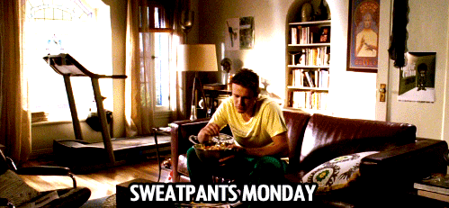

It's true. Getting broken up with sucks. It hurts, you feel like crap and you just want to say eff it all and leave me alone. But you can't do that. You have to move on, no matter how much it hurts. Ish happens and Peter Bretter is the man to get you through. So if you want to move on from being miserable, sitting in your sweats crying to being awesome, read this how to. Thank you.
I know it seems counter intuitive but hear me out. This is your chance to get out all of the emotion and tears. Its going to hurt. If he/she cheated on you (I'm looking at you Sarah Marshall), it will probably hurt a lot me. Take this time to grieve. Men, it's okay to cry. Peter Bretter did it and look how he turned out.
You don't have to go to the extreme and go to Hawaii (but if you have the moolah for it, then you definitely SHOULD go to Hawaii.) It could be a staycation in your city or a different city in the same state. Go on a road trip with your friends, get schwasty and do fun shit. Go on your eat, pray, love journey and find yourself. Don't just stay in the house in your sweats all week.
Just do stuff that you used to like. If you're upset about the breakup, chances are, you haven't had the chance to pursue your own hobbies while in the relationshop, or you're too busy moping to pursue a hobby. Even if you don't feel like it, you gotta get up and nike. Just do it. Like Peter did, do yoga, learn to surf, or create that Dracula musical. Find yourself.